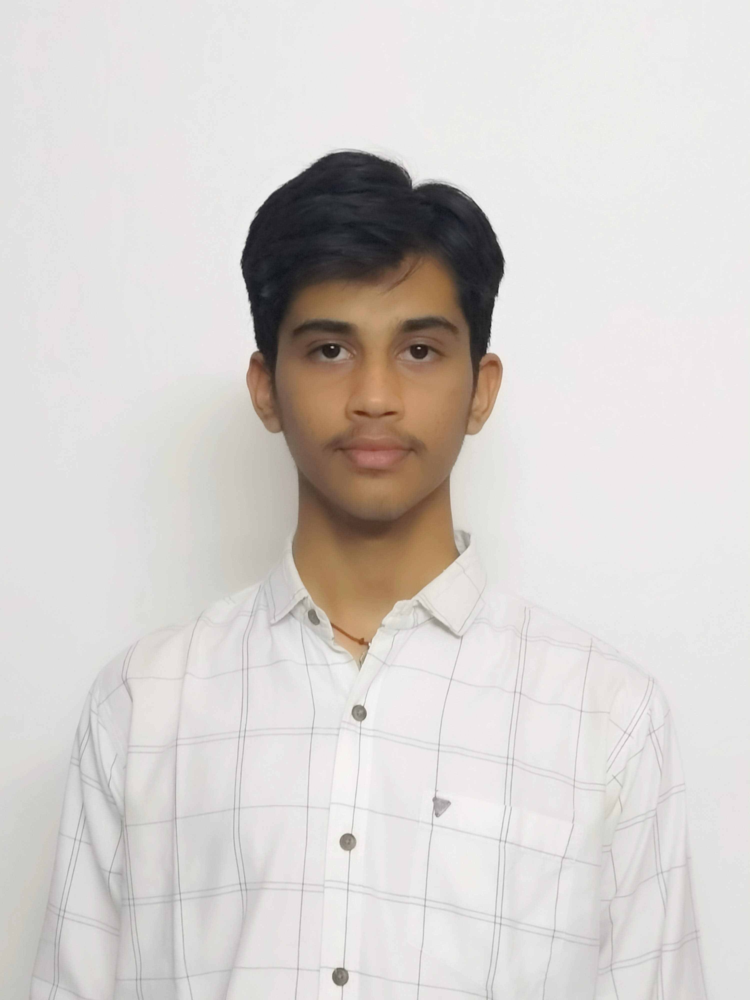

MY RESUME

SURAJ JONNALAGEDDA
PHONE NUMBER :- 9182187917
EMAIL :- surajjonnalagedda@gmail.com
Career Objective
I am looking forward to build a career associated with Computer Science and its concepts. Having diverse
interests and abilities in and around computing and being adaptable to new
Environments,I would like to work in the company as the objectives match with my skillsets
ACADEMIC QUALIFICATIONS
| Degree |
Year of Passing |
Name of the Institution |
Marks/Percentage |
| B.TECH |
2025 |
GITAM UNIVERSITY |
9.34 |
| INTERMEDIATE |
2021 |
SRI CHAITANYA |
94% |
| 1OTH |
2019 |
LITTLE ANGELS SCHOOL |
87% |
CERTIFICATIONS:
- Trained on C with DATAPRO in Visakhapatnam from11 SEPTEMBER 2021 to 25-102021
- Trained on Python in GITAM UNIVERSITY 2ND SEMESTER
- Trained on Data Structures and JAVA in GITAM UNIVERSITY 2ND YEAR
TECHNICAL SKILLS:
- LANGUAGES:
- C
- JAVA
- PYTHON
- HTML
- CSS
- DATA STRUCTURES
AREAS OF INTEREST:
C, JAVA, WEB DEVELOPMENT (FRONT END).
ACHIVEMENTS:
- Member of Pragnya Club in GITAM.
- Completed ‘A’ Certificate in National cadet corps (NCC)/ UNIT- 6(A) AIR SQN(FLG)NCC, VSP in 2019.
- First in Logical reasoning (Inter house competitions) in 2018
PERSONAL DETAILS:
Date of Birth: 23 SEPTEMBER 2004.
FATHER’S NAME: S K JAGANNADH JONNALAGEDDA
MOTHER’S NAME: NIVEDINI JONNALAGEDDA
PROFILES:
Instagram
Linkedin
Github
Twitter